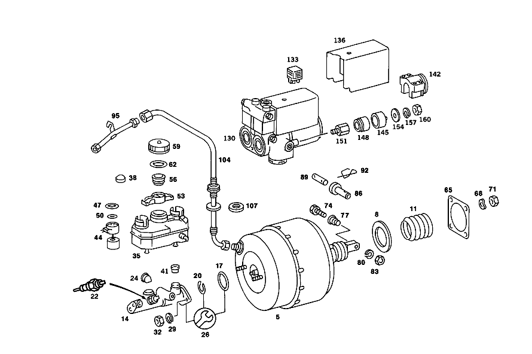

| № | Артикул | Название | Кол. | Примечание | Ограничение |
|---|---|---|---|---|---|
| 5 | A 001 430 84 30 | УСИЛИТЕЛЬ ТОРМ. ПРИВОДА | - | ||
| 5 | A 002 430 68 30 | Аппарат тормозной системы | 1 | ||
| 8 | A 000 435 09 12 | - ФИЛЬТР | 1 | ||
| 11 | A 000 431 43 87 | - Защитный колпачок | 1 | ||
| 14 | A 003 430 59 01 | Главный цилиндр | 1 | [071] UP TO CHASSIS 024 020046 044 044009 | |
| 14 | A 002 430 28 01 | Главный цилиндр | 1 | ||
| 14 | A 002 430 93 01 | Главный цилиндр | 1 | ||
| 14 | A 004 430 09 01 | Главный цилиндр | 1 | [072] FROM CHASSIS 024 020047 044 044010 | |
| 17 | A 004 997 32 45 | - Уплотнительное кольцо | 1 | ||
| 20 | N 000472 028000 | - Стопорное кольцо | 1 | ||
| 22 | A 004 542 30 17 | - Переключатель | 1 | [071] UP TO CHASSIS 024 020046 044 044009 | |
| 26 | A 001 586 93 43 | ремкомплект | 1 | TO 002 430 28 01,002 430 93 01 | |
| 26 | A 002 586 22 43 | ремкомплект | 1 | TO 003 430 59 01,003 430 60 01 | |
| 26 | A 000 430 27 60 | Уплотнительное кольцо | 1 | TO 004 430 09 01 | |
| 29 | N 912004 008102 | Пружинное кольцо | 2 | ||
| 32 | N 000934 008013 | Гайка | 2 | ||
| 35 | A 000 431 64 02 | БАЧОК | - | ||
| 35 | A 001 431 42 02 | Бак | 1 | ||
| 35 | A 001 431 55 02 | Доливочный бачок | 1 | [071] UP TO CHASSIS 024 020046 044 044009 | |
| 35 | A 001 431 53 02 | Бак | 1 | [072] FROM CHASSIS 024 020047 044 044010 | |
| 38 | A 000 431 76 87 | - Защитный колпачок | 1 | [071] UP TO CHASSIS 024 020046 044 044009 | |
| 38 | A 000 431 90 87 | - Защитный колпачок | 2 | [072] FROM CHASSIS 024 020047 044 044010 | |
| 41 | A 000 295 00 50 | - ВТУЛКА | - | ||
| 41 | A 000 431 09 50 | - втулка | 2 | [402] БОЛЬШЕ НЕ ПОСТАВЛЯЕТСЯ | |
| 41 | A 000 431 09 35 | - СОЕДИНИТЕЛЬ | 2 | ||
| 44 | A 002 542 06 17 | - ДАТЧИК | - | ||
| 44 | A 001 542 63 17 | - Ремк-т датчика уровня | 1 | TEVES, CONTACT INSERT, FRONT | |
| 44 | A 001 542 63 17 | - Ремк-т датчика уровня | 1 | THREE\-CHAMBER RESERVOIR,REAR | |
| 44 | A 002 542 99 17 | - Датчик уровня | 1 | TEVES, CONTACT INSERT, REAR | |
| 47 | A 000 431 75 60 | - Уплотнение | 2 | ||
| 50 | A 000 431 82 60 | - уплотнение | 2 | ||
| 53 | A 000 431 00 62 | - Брызгозащитная панель | 1 | ||
| 56 | A 000 431 43 34 | - Сетка | 1 | ||
| 59 | A 000 431 54 33 | - Запорная крышка | - | ||
| 62 | A 000 997 29 40 | - Уплотнительное кольцо | 1 | ||
| 62 | A 000 431 97 60 | - УПЛОТНИТ. КОЛЬЦО | 1 | ||
| 65 | A 115 431 01 80 | уплотнение | 1 | ||
| 68 | N 000137 008204 | Пружинная шайба | 4 | ||
| 71 | N 000934 008013 | Гайка | 4 | ||
| 74 | N 000933 008153 | Винт | 1 | НАЖИМНАЯ ШТАНГА УСИЛИТЕЛЯ ТОРМОЗНОГО ПРИВОДА НА ПЕДАЛИ ТОРМОЗА; M8X25\-8.8 | |
| 77 | A 115 291 03 50 | втулка | 1 | НАЖИМНАЯ ШТАНГА УСИЛИТЕЛЯ ТОРМОЗНОГО ПРИВОДА НА ПЕДАЛИ ТОРМОЗА | |
| 80 | N 000137 008204 | Пружинная шайба | 1 | НАЖИМНАЯ ШТАНГА УСИЛИТЕЛЯ ТОРМОЗНОГО ПРИВОДА НА ПЕДАЛИ ТОРМОЗА | |
| 83 | N 000934 008013 | Гайка | 1 | НАЖИМНАЯ ШТАНГА УСИЛИТЕЛЯ ТОРМОЗНОГО ПРИВОДА НА ПЕДАЛИ ТОРМОЗА | |
| 86 | A 123 292 01 50 | втулка | 1 | НАЖИМНАЯ ШТАНГА УСИЛИТЕЛЯ ТОРМОЗНОГО ПРИВОДА НА ПЕДАЛИ ТОРМОЗА [094] FOR CONNECTION OF 107 290 04 18 BRAKE PEDALS WITH 002 430 44 30 BRAKE BOOSTER,SEE SERVICE INFORMATION 42/58 | |
| 89 | A 126 292 00 74 | Палец | 1 | НАЖИМНАЯ ШТАНГА УСИЛИТЕЛЯ ТОРМОЗНОГО ПРИВОДА НА ПЕДАЛИ ТОРМОЗА | |
| 89 | A 126 292 01 74 | БОЛТ | 1 | НАЖИМНАЯ ШТАНГА УСИЛИТЕЛЯ ТОРМОЗНОГО ПРИВОДА НА ПЕДАЛИ ТОРМОЗА [095] FOR CONNECTION OF 107 290 22 18 BRAKE PEDALS WITH 001 430 84 30 BRAKE BOOSTER,SEE SERVICE INFORMATIOIN 42/58 | |
| 92 | N 912011 008000 | Механический фиксатор | 1 | НАЖИМНАЯ ШТАНГА УСИЛИТЕЛЯ ТОРМОЗНОГО ПРИВОДА НА ПЕДАЛИ ТОРМОЗА | |
| 95 | A 109 430 10 29 | ПРОВОД | 1 | ||
| 95 | A 107 430 09 29 | Провод | 1 | ||
| 95 | A 116 430 14 29 | ПРОВОД | 1 | [402] БОЛЬШЕ НЕ ПОСТАВЛЯЕТСЯ | |
| 104 | A 107 430 06 29 | Провод | 1 | ВАКУУМНЫЙ ТРУБОПРОВОД | |
| 104 | A 107 430 15 29 | Провод | 1 | ВАКУУМНЫЙ ТРУБОПРОВОД | |
| 107 | A 116 987 09 41 | - Эластомерная шайба | 1 | [402] БОЛЬШЕ НЕ ПОСТАВЛЯЕТСЯ | |
| A 000 431 16 33 | - Колпачок | 2 | [402] БОЛЬШЕ НЕ ПОСТАВЛЯЕТСЯ |
Позиций: 54 · подписано на схемах: 53 · колесо — плавный зум в курсор, перетаскивание — пан, двойной клик — зум, клик по артикулу — скопировать.